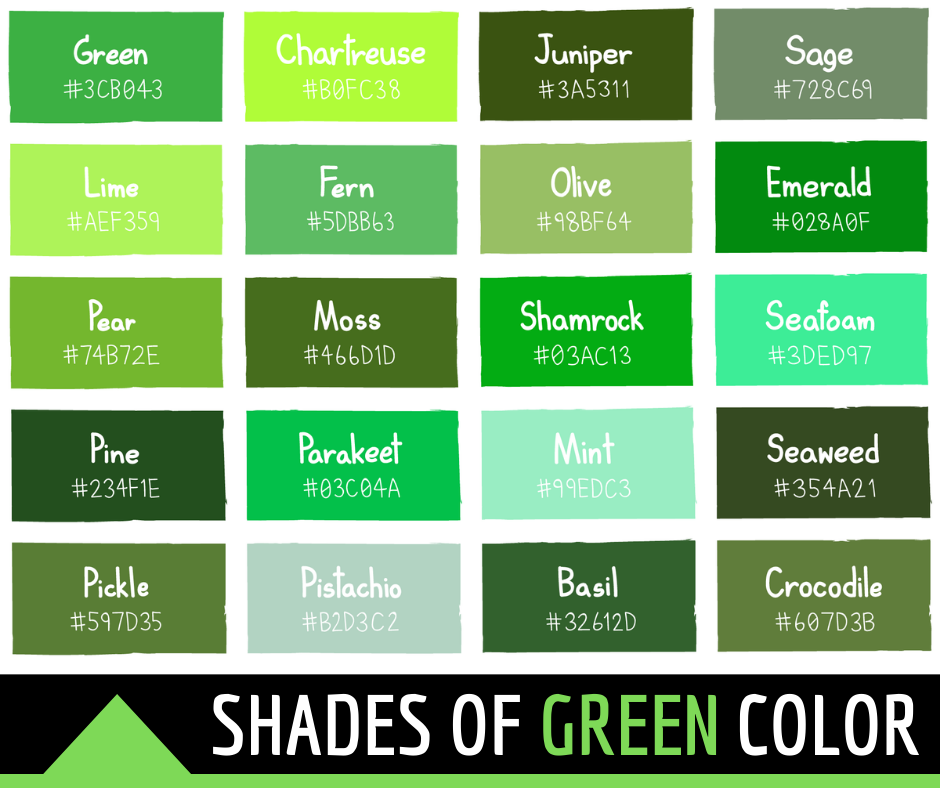
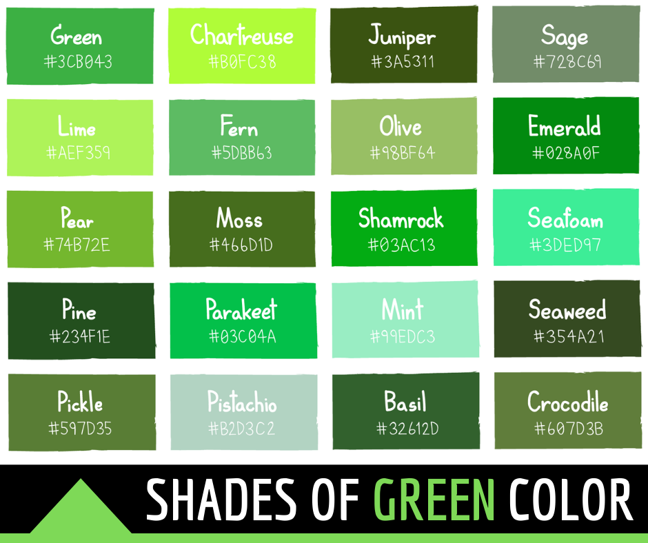

Within this document you will see the various shades of green that you can write text in HTML with.
This previous line was written in a lime green colour, whereas this line you see is different. It's written in the colour known as olivedrab.
This sentence is also in smaller text size.
 

This line is written in another color using the style element and rgb colouring